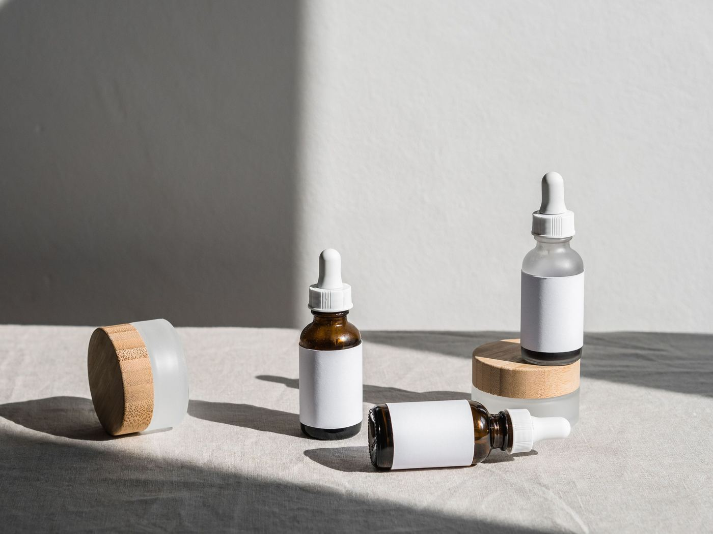
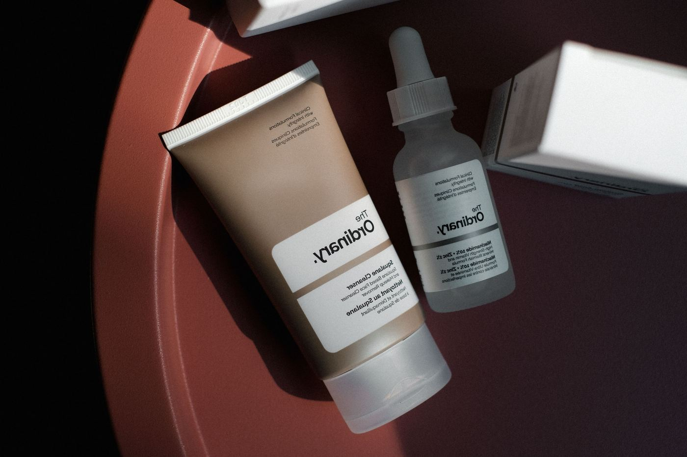
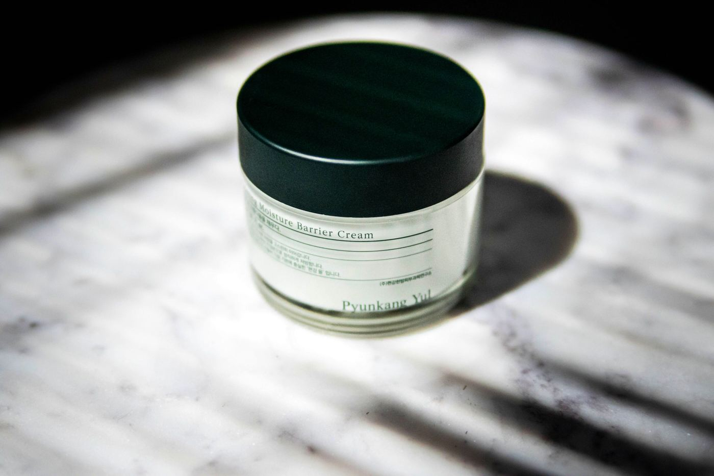

Comfort + richer textures
Focus on gentle cleansing, hydration and moisturizer feel. Use this as a practical starting point, then adjust product textures and routine frequency based on comfort, climate and personal preference.
Start with broad patterns instead of forcing your skin into a rigid label. Use this as a practical starting point, then adjust product textures and routine frequency based on comfort, climate and personal preference.
Tight, comfortable, oily or mixed. Use this as a practical starting point, then adjust product textures and routine frequency based on comfort, climate and personal preference.
How skin changes through the day. Use this as a practical starting point, then adjust product textures and routine frequency based on comfort, climate and personal preference.
How easily skin reacts to changes. Use this as a practical starting point, then adjust product textures and routine frequency based on comfort, climate and personal preference.
Match textures and routine steps. Use this as a practical starting point, then adjust product textures and routine frequency based on comfort, climate and personal preference.
Focus on gentle cleansing, hydration and moisturizer feel. Use this as a practical starting point, then adjust product textures and routine frequency based on comfort, climate and personal preference.
Prioritize consistency without over-stripping. Use this as a practical starting point, then adjust product textures and routine frequency based on comfort, climate and personal preference.
Different areas may need different texture choices. Use this as a practical starting point, then adjust product textures and routine frequency based on comfort, climate and personal preference.
Keep the routine simple and introduce change carefully. Use this as a practical starting point, then adjust product textures and routine frequency based on comfort, climate and personal preference.
May develop shine quickly. Lightweight hydration and consistent cleansing can keep routines comfortable. Use this as a practical starting point, then adjust product textures and routine frequency based on comfort, climate and personal preference.


Different areas can behave differently. Use flexible textures and avoid over-correcting one zone. Use this as a practical starting point, then adjust product textures and routine frequency based on comfort, climate and personal preference.
Keep routines minimal, introduce products slowly and prioritize comfortable textures. Use this as a practical starting point, then adjust product textures and routine frequency based on comfort, climate and personal preference.


Changing too many products at once, skipping sunscreen, over-exfoliating or choosing products only by trend. Use this as a practical starting point, then adjust product textures and routine frequency based on comfort, climate and personal preference.